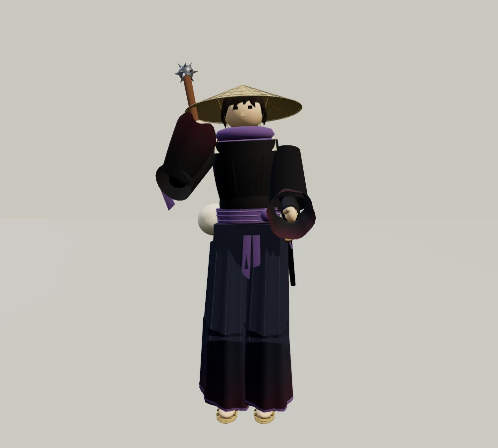
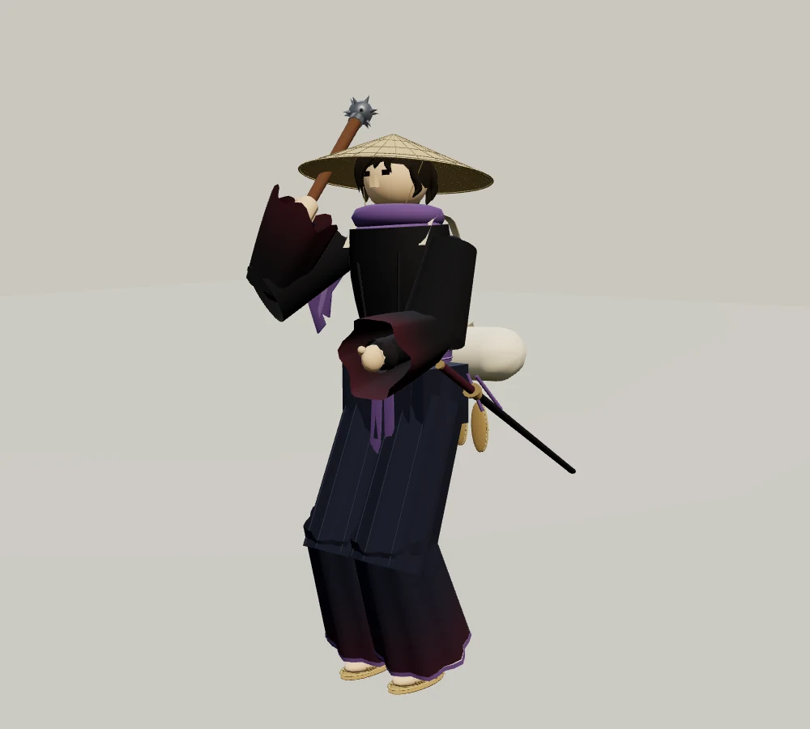
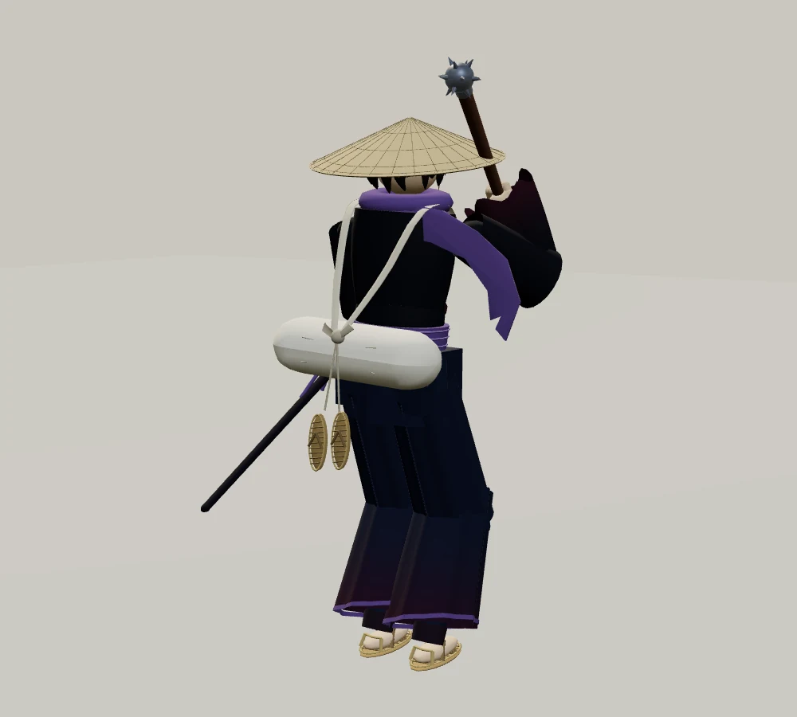
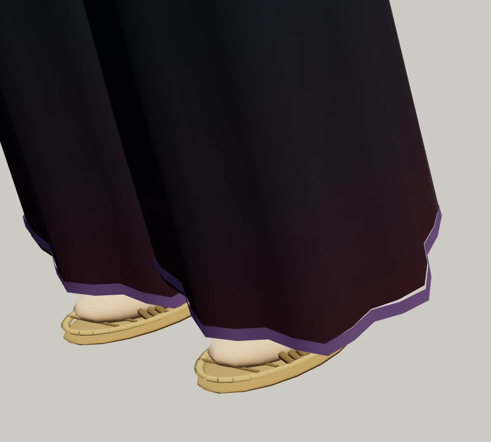
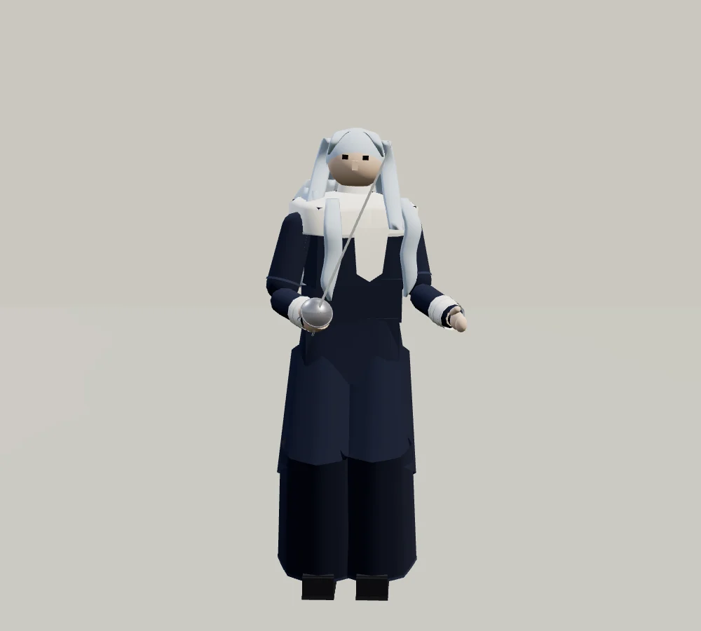
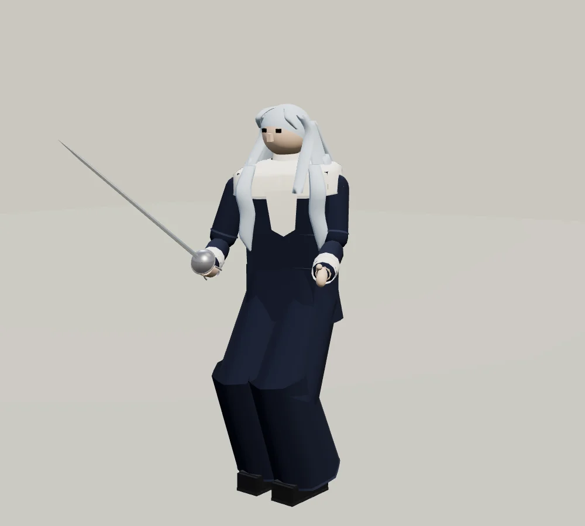
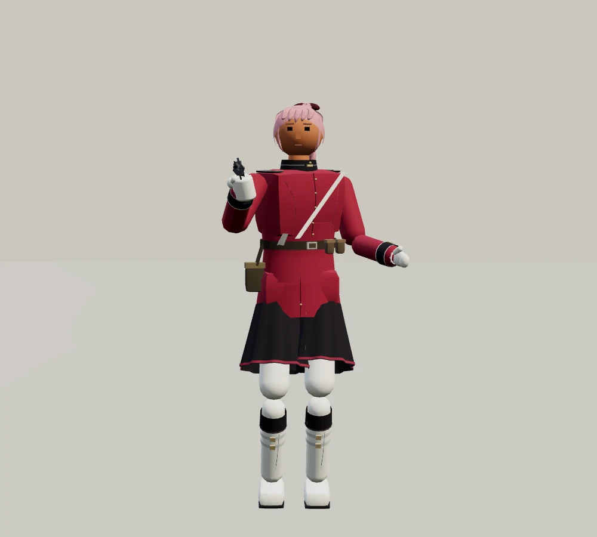
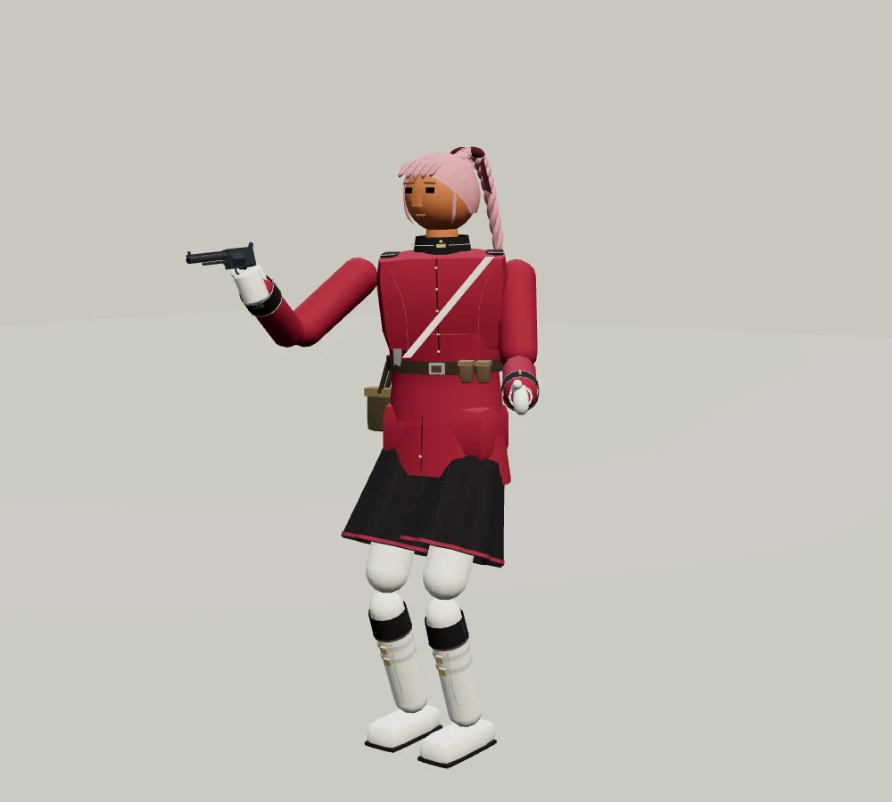

김씨
칼을 뽑지 않는 낭인 · 32세
북쪽 항구와 산길
모르겐슈테른 · 비대칭 자연 갈색 머리 · 낮게 쓴 삿갓 · 해진 넓은 소매 · 보라 목도리 · 보자기 봇짐 · 짚신

형이 남긴 검을 허리에 차고 떠도는 낭인. 그 검으로 사람을 베지 않겠다는 약속 때문에, 항구에서 얻은 낯선 철퇴로 호위 일을 한다. 삿갓 아래 마른 찻잎을 넣고 다니며 길에서 만난 이에게 먼저 차를 권한다.
“검은 두고 간다. 이걸로 하지.”
다른 각도 보기



에이라 린드
눈길의 사제 · 26세
동시베리아 내륙 · 얼어붙은 호수 교구
레이피어 · 청백색 웨이브 머리 · 흰 칼라 · 남색 사제복

긴 겨울이면 마을 사이를 걸어 약과 편지를 나르는 순회 사제. 돌아오지 못한 사람들의 이름을 작은 종 안쪽에 새긴다. 얼어붙은 길에서 자신과 짐을 지키려 레이피어를 배웠다. 봄을 믿지만, 봄이 모든 사람에게 제때 오지 않는다는 것도 안다.
“눈이 더 쌓이기 전에 지나가야 해요.”
다른 각도 보기

새벽의 얼음만 — 무대 둘러보기
에이라 린드와 겨루기
사미라 미르자
붉은 봉인의 전령 · 28세
인도 · 서해안의 항구 도시
리볼버 · 분홍 땋은 머리 · 허리선을 높인 붉은 제복

인도 서해안의 항구에서 출발한 군의 전령. 폭풍으로 철수 명령을 제때 전하지 못한 뒤, 돌아오지 못한 동료들의 이름과 봉인된 명령서를 품고 다닌다. 지금은 먼 성소의 마지막 문을 지키며, 그 문을 넘어갈 사람만큼은 헛되이 보내지 않으려 한다.
“이 문을 넘을 이유는 있겠지요.”
다른 각도 보기
